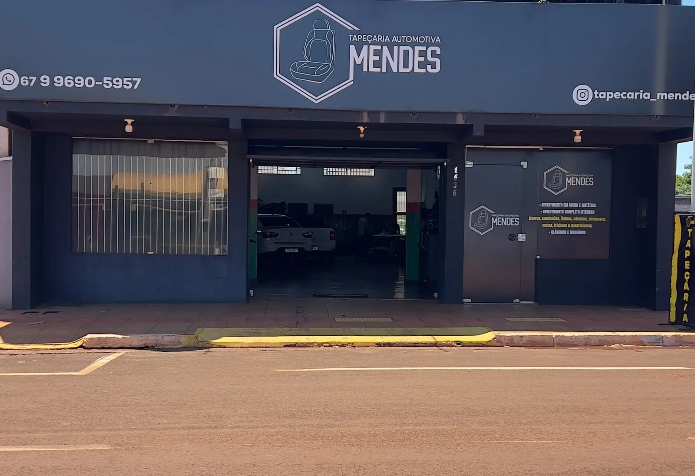
Costurando ideias, fabricando felicidade.
Tapeçaria automotiva em Rio Brilhante
Bancos, assoalho, forros de porta, teto e volante para carros, caminhonetes e caminhões. E também sofás, cabeceiras e estofados para casa e empresa.
- Desde 2018
- Seg a sex, 7h às 11h e 13h às 17h
- R. Benjamin Constant, 1636, Centro
A Tapeçaria Mendes
Desde 2018 no Centro de Rio Brilhante. Do carro ao sofá da sala: revestimentos e reformas de veículos em geral, estofados para casas e empresas, confecções personalizadas e fabricação em grande escala.
Cada peça é cortada e costurada ali dentro, no material e na cor que o cliente escolhe: couro natural, couro sintético, veludo, acquablock, linho ou lona.
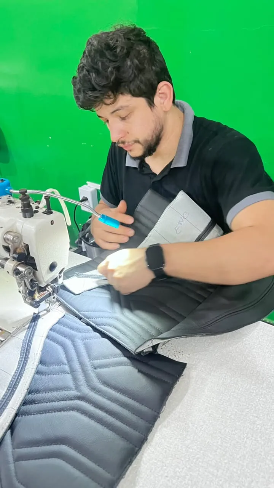
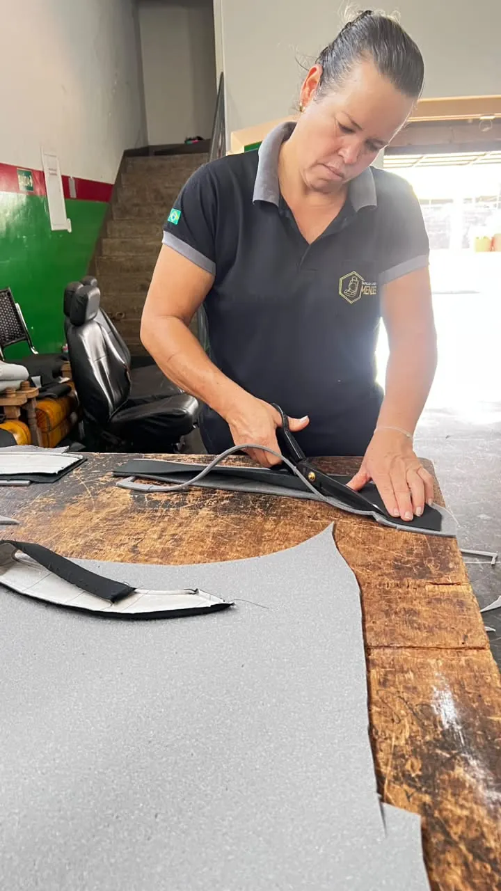
Serviços
Toque em um serviço para ver o trabalho, os valores de referência e pedir o orçamento.
No carro
Interior refeito peça por peça, do banco ao teto.
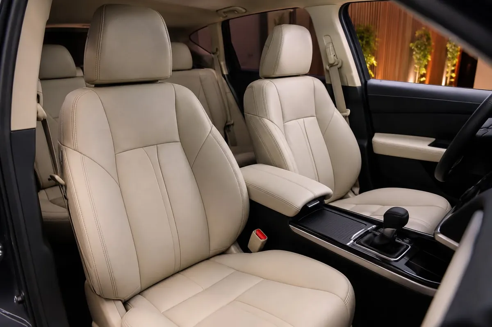
O revestimento troca a capa dos bancos por uma nova, sob medida. O jogo completo cobre os bancos da frente e o de trás. Escolha o material:
- Couro naturalAcabamento premiumR$ 4.599
- 70% couro, 30% sintéticoCouro onde mais se encostaR$ 3.179
- Couro sintéticoFácil de limparR$ 2.279
- TecidoConfortável e respirávelR$ 2.279
Jogo completo. Valor de referência, confirmado depois da avaliação do carro.
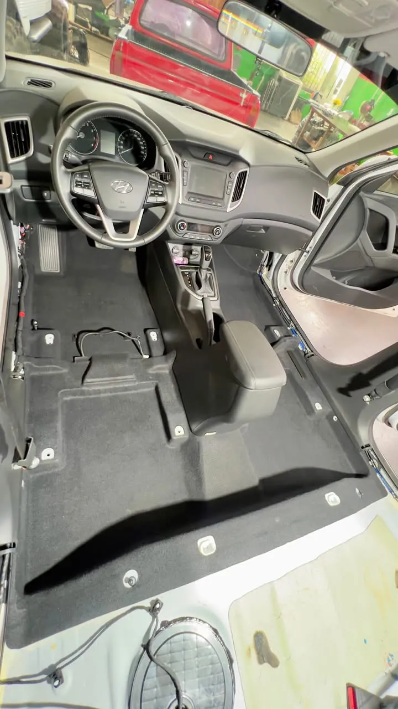
O assoalho é o revestimento do piso, por baixo dos tapetes. O novo é cortado no formato exato do carro e encaixado no lugar do antigo.
| Picape compacta Saveiro, Strada, Montana | R$ 670 |
|---|---|
| Hatch todos os modelos | R$ 750 |
| SUV todos os modelos | R$ 800 |
| Picape média Hilux, S10, Rampage, Toro, Ranger, Frontier | R$ 900 |
| Picape grande RAM, Silverado, F-150 | R$ 1.200 |
Valor de referência, confirmado depois da avaliação do carro.
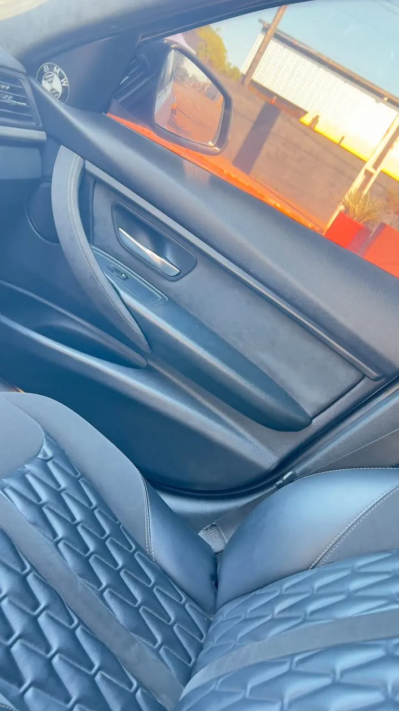
O forro é o revestimento da parte de dentro da porta. Pode ser refeito no mesmo material e na mesma cor dos bancos, para o interior combinar.
| Pequeno | a partir de R$ 120 a unidade · jogo R$ 480 |
|---|---|
| Médio | a partir de R$ 160 a unidade · jogo R$ 640 |
| Grande | a partir de R$ 290 a unidade · jogo R$ 1.160 |
Valor de referência, confirmado depois da avaliação do carro.
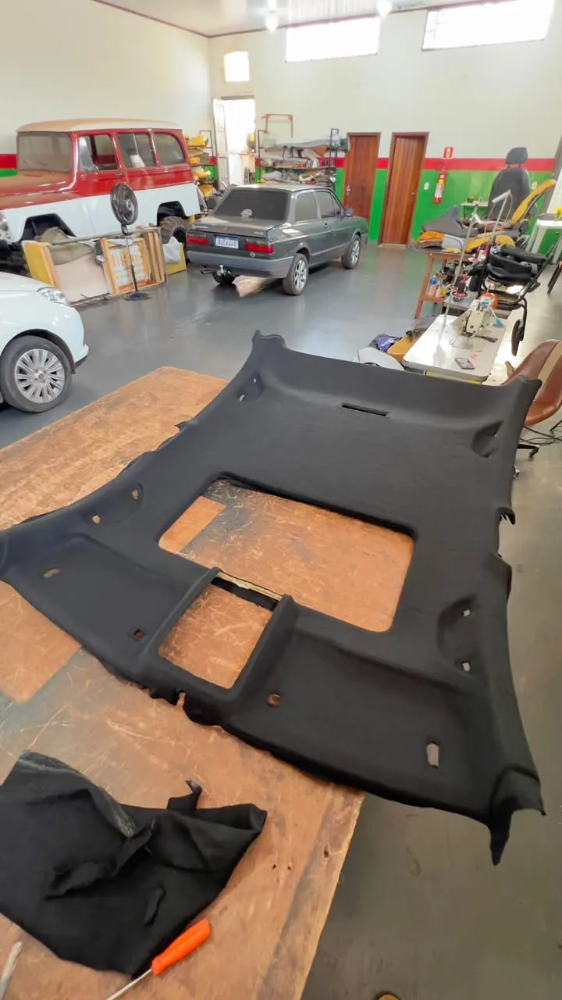
Com o tempo e o calor, o tecido do teto descola e cai. Na troca, o forro velho sai e entra um novo, bem esticado.
A partir de R$ 600
O menor é o de uma Saveiro cabine simples. O valor muda com o tamanho do carro e é confirmado na avaliação.
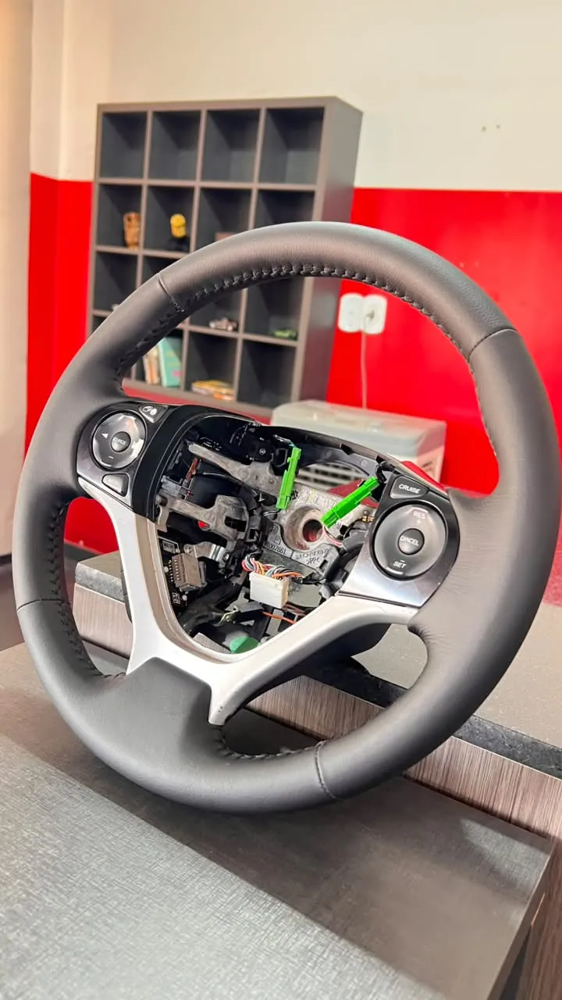
O volante é a parte do carro que a mão mais gasta. No revestimento, ele recebe couro novo, com o desenho, o tipo de costura e a cor da linha do jeito que você quiser. Se tiver uma ideia, mande uma foto ou um vídeo de inspiração.
| Couro natural | R$ 320 a R$ 700 |
|---|---|
| Couro sintético | R$ 200 a R$ 400 |
Valor de referência, confirmado depois da avaliação do volante.
No caminhão
Cabine inteira: bancos, cama e acabamento.
Banco do motorista, banco do passageiro e a cama da cabine revestidos no mesmo padrão, com costura aparente. Cada cabine é de um jeito, por isso o orçamento é feito com o especialista.
Em casa e na empresa
Sofás, cabeceiras, puffs e estofados feitos ou reformados.
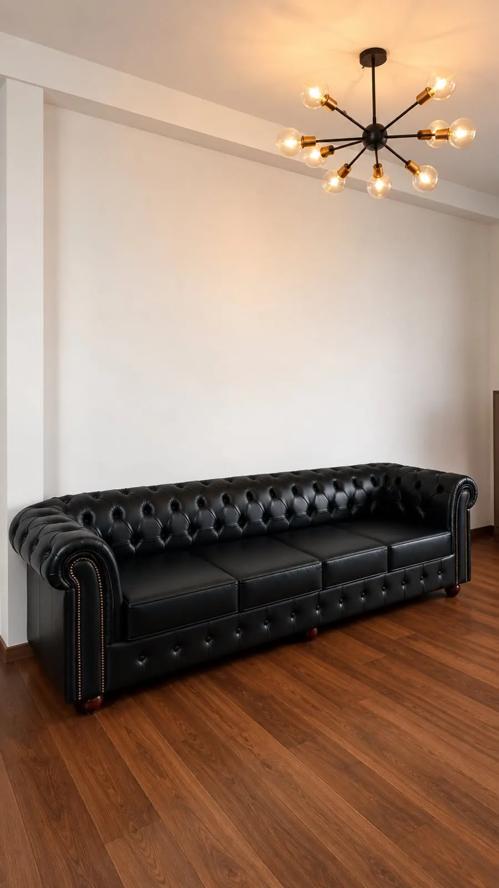
Fabricação e reforma de sofás, poltronas, puffs e cadeiras, para casas e empresas. O tecido é escolhido junto: couro, veludo, linho, acquablock e outros.
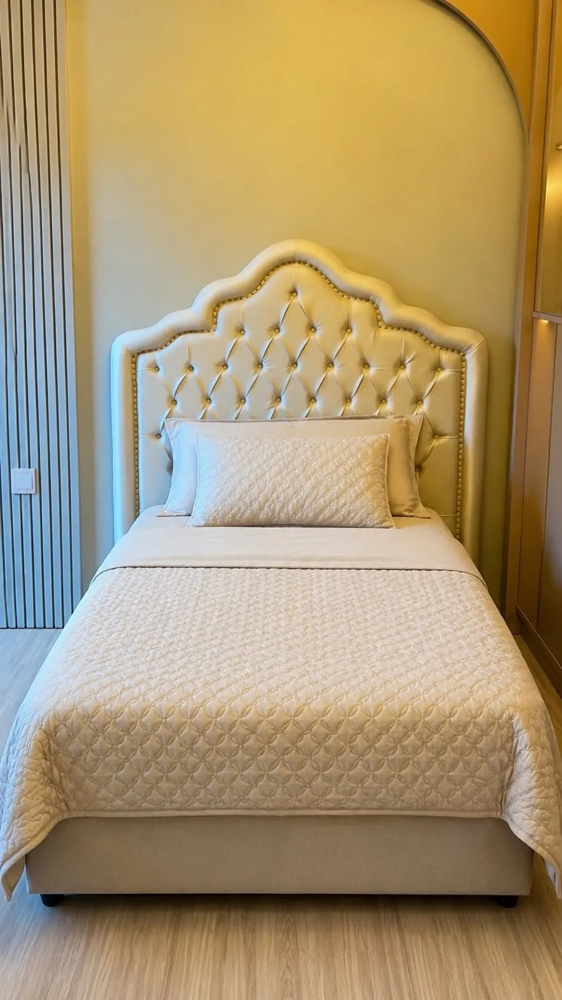
Cabeceiras de cama sob medida, lisas, com gomos ou em capitonê, no tamanho e no tecido do quarto.
Sob medida
O que não está em nenhuma tabela.
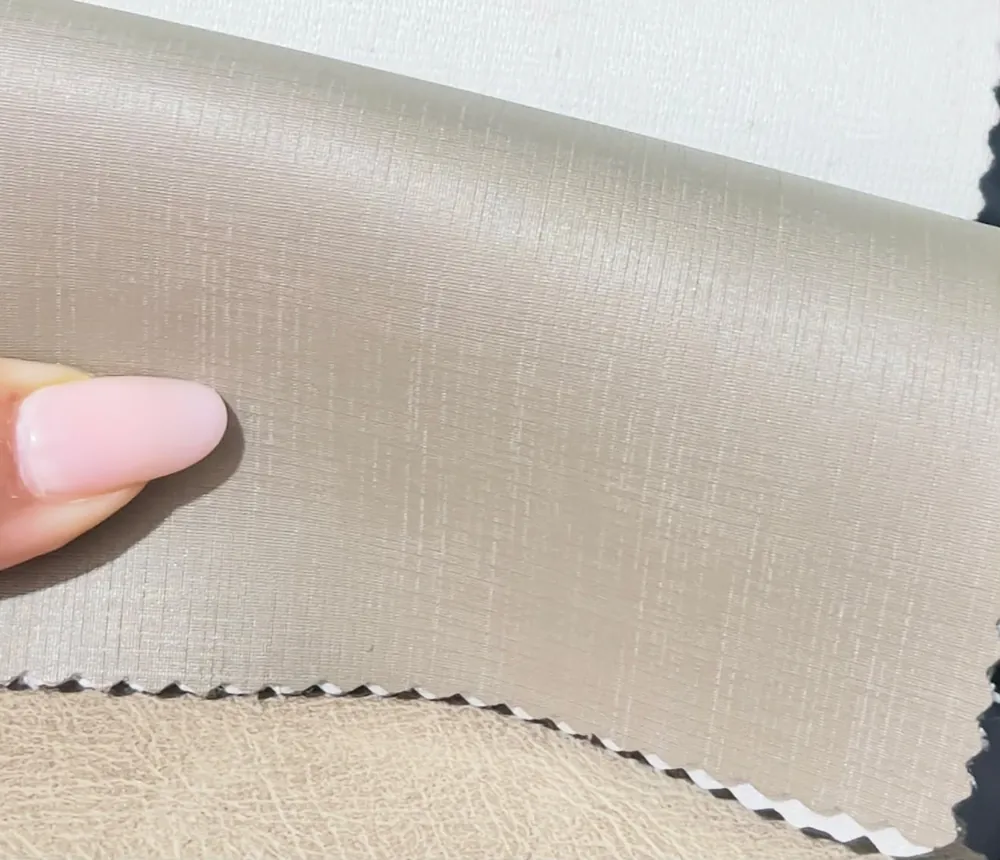
Capas de barco, de objetos e de equipamentos, e lonas sob medida. Para barco, o mais usado é a lona marítima, que aguenta sol e água.
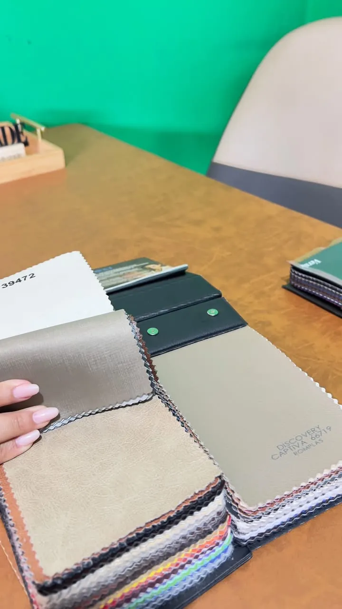
Confecções personalizadas e fabricação em grande escala para empresas: o modelo, o material e a quantidade são combinados com o especialista.
Não trabalhamos com limpeza a seco nem com insulfilm.
Monte seu orçamento
Escolha o serviço e veja na hora o valor de referência. A mensagem chega pronta no WhatsApp da Mendes.
Como funciona o pagamento
- 50% no agendamento e 50% na entrega, em dinheiro, Pix, débito ou crédito para 30 dias.
- Ou em até 12x no cartão, no agendamento, com o acréscimo da maquininha.
- Prazo: depende do serviço e é combinado no orçamento.
Trabalhos da Mendes
Mais no Instagram @tapecaria_mendes.
O que os clientes dizem
- Nota no Google
- 5,0
- Avaliações, todas nota 5
- 3
- Seguidores no Instagram
- 1,2 mil
R. Benjamin Constant, 1636, Centro
Rio Brilhante (MS), CEP 79130-000.
- Segunda a sexta
- 7h às 11h e 13h às 17h
- Sábado e domingo
- Fechado
Dúvidas comuns
Os valores do site são os finais?
São valores de referência. O valor final é confirmado depois da avaliação do carro ou da peça, porque cada modelo é de um jeito.
Como é o pagamento?
50% no agendamento e o restante na entrega, em dinheiro, Pix, débito ou crédito para 30 dias. Ou o total em até 12x no cartão, no agendamento, com o acréscimo da maquininha.
Quanto tempo leva?
Depende do serviço. O prazo é combinado no orçamento.
Quais materiais vocês usam?
Couro natural, couro sintético, veludo, acquablock, linho e lonas, em várias cores.
Fazem só uma parte, como o banco da frente ou uma faixa?
Sim. São orçamentos específicos: fale com o especialista pelo WhatsApp.
Fazem limpeza a seco ou insulfilm?
Não. A Mendes trabalha com tapeçaria, estofados e confecções.